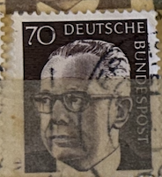
| SOURCE | TITLE| IMAGE MATCH | click to source page |
| www.ebay.com | GERMANY WEST DEUTSCHE BUNDESPOST 1970 GUSTAV ... | 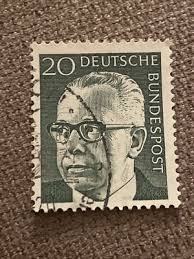 |
| www.ebay.com | Germany Federal, Bund BRD , 1970, Stamp 513, G Heinemann ... | 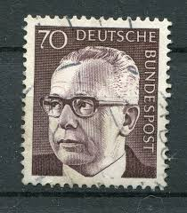 |
| www.flickr.com | beautiful stamp Germany Deutschland 70 pf. Heinemann 70Pf ... | 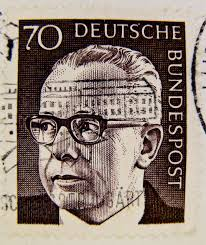 |
| www.ebay.com | West Germany - 1970 - Gustav Heinemann - 10Pfg - Used - #01 ... | 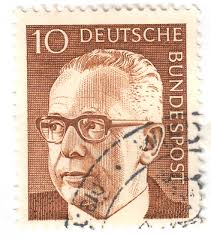 |
| www.alamy.com | Gustav Heinemann, President of West Germany (1969-1974 ... | 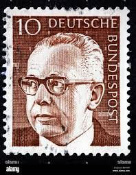 |
| www.ebid.net | Germany 1970 Bundespost Gustav Heinemann 1Dm Used ... | 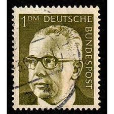 |
| www.dreamstime.com | Gustav Heinemann, President of the Federal Republic of ... | 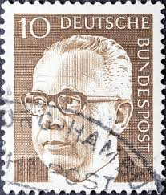 |
| www.istockphoto.com | German Post Stamp Showing Gustav Heinemann Stock Photo ... | 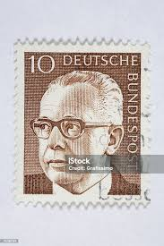 |
| www.alamy.com | Postage stamp from the Federal Republic of Germany in the ... | 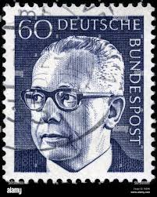 |
| www.shutterstock.com | Gustav Heinemann 3rd Federal President Germany Stock Photo ... | 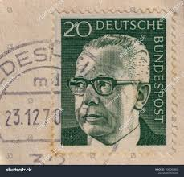 |
| www.allnumis.com | 20 Pfennig - Gustav Heinemann, People - Personalities-man ... | 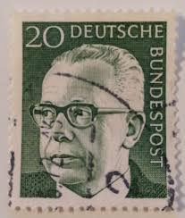 |
| www.hipstamp.com | Germany 1970,Sc.#1028 and more MNH, Pres. Gustav Heinemann ... | 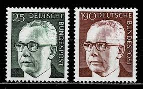 |
| www.ebay.com | GERMANY WEST DEUTSCHE BUNDESPOST 1970 GUSTAV HEINEMANN 30 ... | 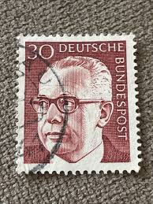 |
| www.ebid.net | Germany 1970 Bundespost Gustav Heinemann 40Pfg Used ... | 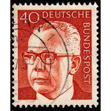 |
| www.hipstamp.com | Germany Scott 1035 used 1970-1973 President Heinemann stamp ... | 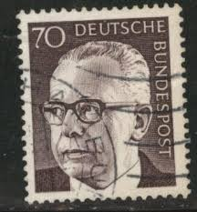 |
| www.dreamstime.com | Federal President Dr. Gustav Heinemann Editorial Photo ... | 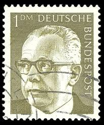 |
| www.istockphoto.com | German Stamp Shows Federal President Gustav Heinemann Stock ... | 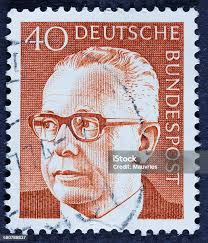 |
| www.alamy.com | Postmarked stamps from the Federal Republic of Germany in ... |  |
| www.linkedin.com | Forensic Technology for the examination of postage stamps ... | 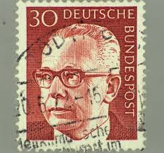 |
| www.bidcurios.com | Germany Berlin Federal President Gustav Heinemann 7 mint ... | 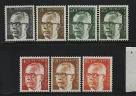 |
| www.old-stamps.com | Gustav Heinemann / Deutsche Bundespost Berlin 1970 | 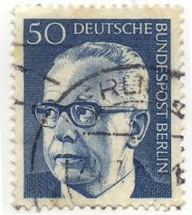 |
| m.poppe-stamps.com | Poppe Stamps: German Federal Republic, 1970, 1537 ... |  |
| www.ebay.com | Stamp Germany, Scott # 1040 Mint LH | eBay | 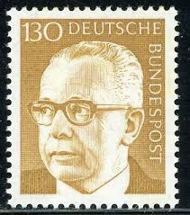 |
| boudewijnhuijgens.getarchive.net | 31 1971 deutsche bundespost stamps, Photos by nightflyer ... | 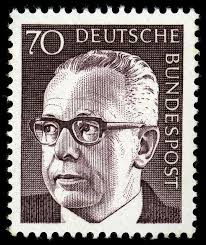 |
| www.bidcurios.com | Stamp :- Germany Bundespost 10 Pf Portrait Definitive Stamp ... | 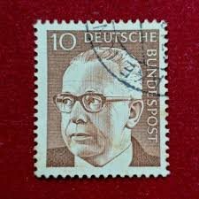 |
| en.wikipedia.org | Militia Immaculatae - Wikipedia | 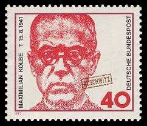 |
| www.kitantik.com | Almanya Pulu - Germany Stamp - Mektup Zarfından Kesilmiş ... | 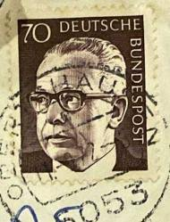 |
| www.dreamstime.com | Gustav Heinemann, 3rd Federal President of Germany ... | 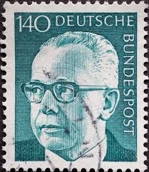 |
| biologos.org | Dietrich Bonhoeffer says Yes to Christianity and Modern ... | 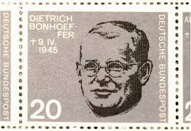 |
| satura-shop.com | 645 Heinemann 2DM Deutsche Bundespost | 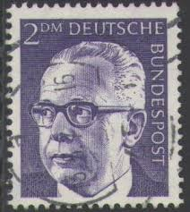 |
| www.dba.dk | Tyskland, stemplet, Dagligserie | DBA | 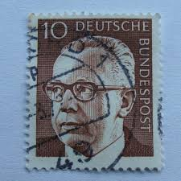 |
| www.alamy.com | Photo of a German postage stamp with an illustration of ... | 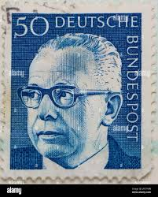 |
| www.osta.ee | Leiunurk 3-499 saksa (225407721) - Osta.ee | 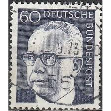 |
| wipfandstock.com | Karl Barth / The Church as Watchman of the State - Wipf and ... | 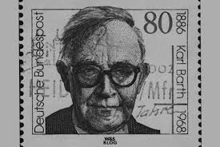 |
| www.shutterstock.com | 2+ Thousand Deutsche Bundespost Royalty-Free Images, Stock ... | 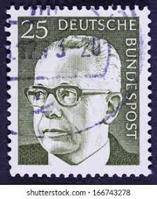 |
| aukro.cz | Německo 1972 Mi: DE 728 Série: Federál. prezident Dr. Gustav ... | 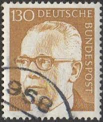 |
| www.briefmarken-brd-berlin.de | Bund 642 ER r.u. FN 1 gestempelt - briefmarken-brd-berlin.de | 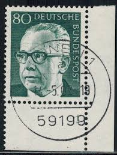 |
| www.ebay.com | Germany 1970 10pf PRESIDENT GUSTAV HEINEMANN SC 1029 MNH | eBay | 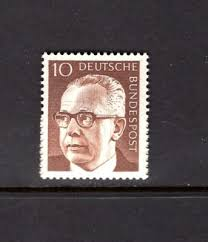 |
| www.sdmorrison.org | Karl Barth on Romans 9:20 - Stephen D. Morrison | 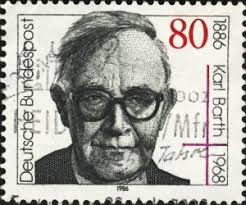 |
| www.ebid.net | Germany 1970 Bundespost Gustav Heinemann. 50Pfg Used Stamp ... | 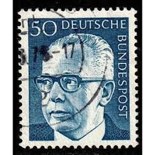 |
| www.elephango.com | Who Was Franklin D. Roosevelt? Educational Resources K12 ... | 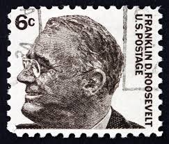 |
| esam.ir | برلین،تمبر کلاسیک ارزشمند المان deutsche | 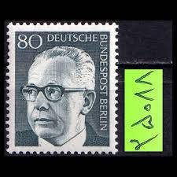 |
| www.istockphoto.com | 10+ Deutsche Bundespost Stamp Stock Photos, Pictures ... | 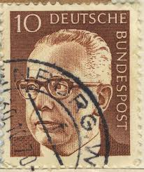 |
| cambridgeforecast.wordpress.com | LION FEUCHTWANGER'S 1930 NOVEL “SUCCESS” | Cambridge ... | 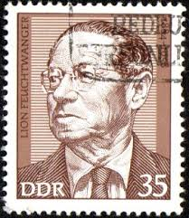 |
| www.reddit.com | John Calvin on Nicolaus Copernicus and Heliocentrism : r ... | 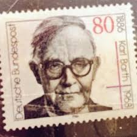 |
| itoldya420.getarchive.net | 26 1973 Deutsche Bundespost Berlin Stamps Image: PICRYL ... | 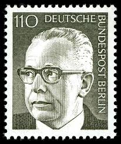 |
| satura-shop.com | 639 Gustav Heinemann 40Pf Bundespost | 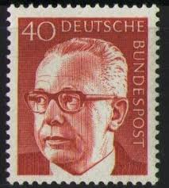 |
| iep.utm.edu | Bonhoeffer, Dietrich | Internet Encyclopedia of Philosophy | 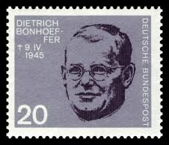 |
| www.mysticstamp.com | 1282 - 1965 4c Prominent Americans: Abraham Lincoln - Mystic ... | 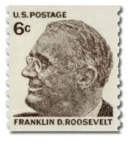 |
| findyourstampsvalue.com | Federal Administration, Portraits and Signatures: Le ... | 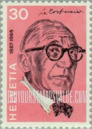 |
| www.alamy.com | Postage stamp: Germany, 1970, Federal president Dr. Gustav ... | 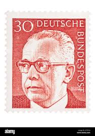 |
| www.bardostamps.com | Modern U.S. Stamps: Scott 1305, 6c Franklin D. Roosevelt (Coil) | |
| www.brandeis.edu | Bonhoeffer and the German Resistance to Fascism – Lessons ... | |
| www.zodiacciphers.com | THE ZODIAC POSTAGE - ZODIAC CIPHERS | |
| m.poppe-stamps.com | Poppe Stamps: German Federal Republic, 1970, 1536 ... | |
| jacobin.com | Ernst Meyer, Theorist of Revolutionary Realpolitik | |
| www.ebay.com | Germany 1971 70pf PRESIDENT GUSTAV HEINEMANN MNH SC 1035 | eBay | |
| aukro.cz | BRD Mi.č. 639, 640, 644 - ražené | Aukro | |
| www.etsy.com | Set of 9 Deutsche Bundespost Stamps, Vintage German ... |